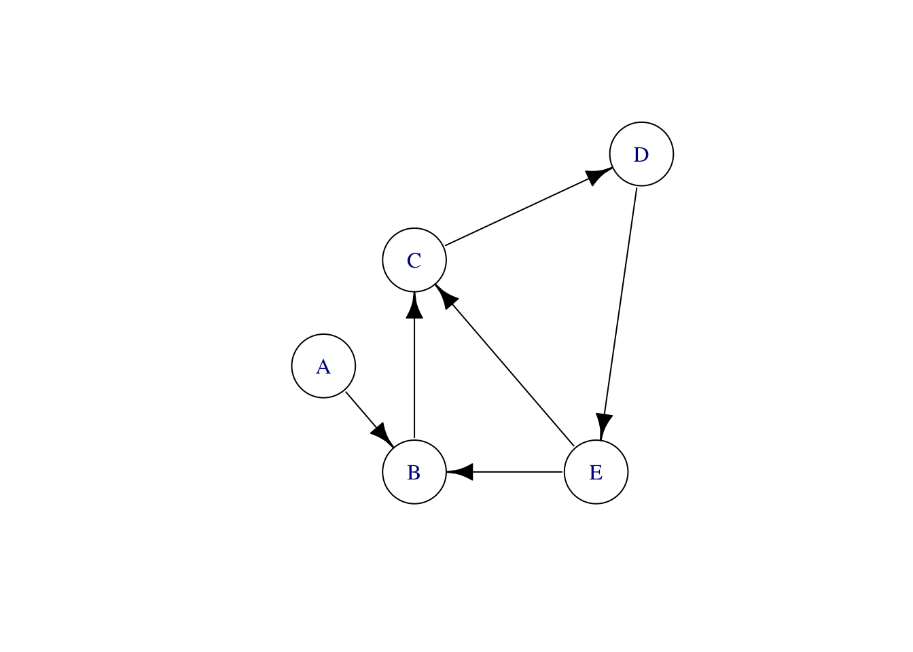
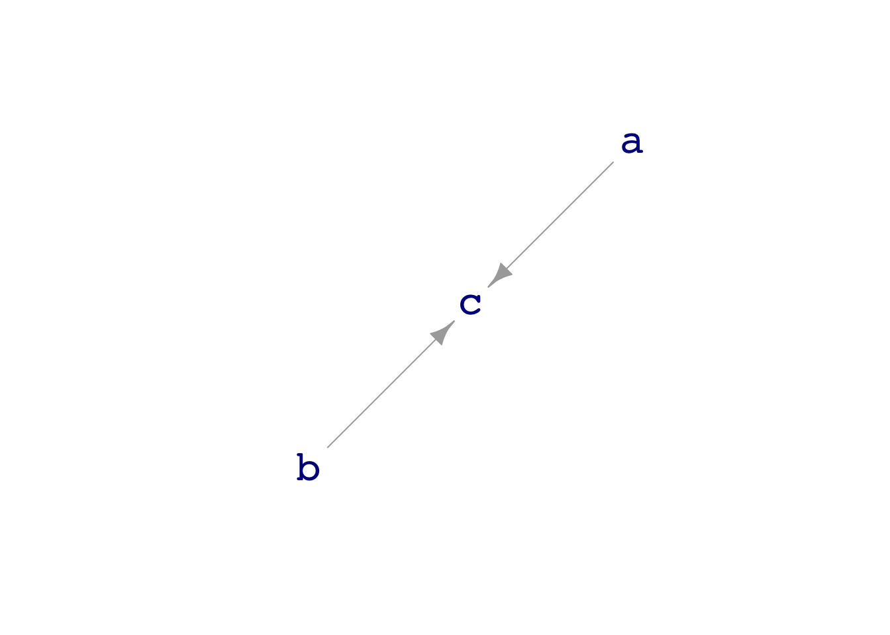

mtcars %>%
summarize(v = var(hp)) v
1 4700.867mtcars %>%
summarize(s = sd(hp)) s
1 68.56287This Lesson introduces two ideas. The first is how to measure variation. This is important, as you can see from the definition of statistical thinking given in the previous Lesson:
Statistic thinking is the explanation or description of measured variation in the context of what remains unexplained or undescribed.
Variation is what we’re trying to explain/describe. To do this, it helps to be able to measure variation.
The second idea is also fundamental to statistical thinking. Often, but not always, our interest in studying data is to reveal the causal connections between variables. This is important, for instance, if we are planning to make an intervention in the world and want to anticipate the consequences. Interventions are things like “increase the dose of medicine,” “stop smoking!”, “lower the budget,” “add more cargo to a plane (which will increase fuel consumption and reduce the range).”
Historically, statisticians were hostile to the idea of using data to explore causal relationships. The one exception was experiment, where the data come from an actual intervention in the world. (See Lesson 32.) Statistics teachers encouraged students to use phrases like “associated with” or “correlated with” and reminded them that “correlation is not causation.”
Regretably, this attitude made statistics irrelevant to that part of the real world where intervention was the matter of interest and experiment was not feasible. A tragic episode of this sort likely caused millions of unnecessary deaths. Starting in the 1940s, doctors and epidemiologists were seeing evidence that smoking causes lung cancer. In stepped the most famous statistician of the age, Ronald Fisher, to insist that the statement should be, “smoking is associated with lung cancer.” He speculated that smoking and lung cancer might have a common cause, perhaps genetic. To establish causation, it would be necessary to run an experiment where people are randomly assigned to smoke or not smoke and then observed for decades to see if they developed lung cancer. Such an experiment is unfeasible and unethical, to say nothing of the need to wait decades to get a result.
Fortunately, around 1960 a researcher at the US National Institutes of Health, Jerome Cornfield, was able to show mathematically that the strength of the association between smoking and cancer ruled out any genetic mechanism. This was one of the first developments in a field called “causal inference”
Variation itself is nature’s only irreducible essence. Variation is the hard reality, not a set of imperfect measures for a central tendency. Means and medians are the abstractions. —– Stephen Jay Gould (1941- 2002), paleontologist and historian of science
A common task in statistical modeling is to break down a variable into components. For instance, a person’s height or intelligence or charm is presumably a combination of genetics and environment. In doing this breaking down, it’s convenient to be able to characterize the size of each component.
There are many possible ways to measure “size.” In this course, we will emphasize two, intimately related measures:
The OpenIntro text introduced the standard deviation in Chapter 3 where it was described as a measure of “spread.” In Chapter 6, OpenIntro introduced the variance as the square of the variance. All this is right, so far as it goes, but it dramatically understates the importance of the two measures. These measures are as important to statistical thinking as the Pythagorean Theorem is to geometry.
You remember the Pythagorean Theorem: \(A^2 + B^2 = C^2\), where \(C\) is the length of the hypothenuse of a right triangle, and \(A\) and \(B\) are the lengths of the other two sides of the triangle. Surprisingly, the Pythagorean Theorem is highly relevant to statistical models.
Recall from OpenIntro chapters 5 & 6 that the linear modeling technique produces two columns of numbers: the fitted values and the residuals. These columns have the same number of rows as the data frame used for training. The fitted values are the output from the model when the explanatory variables from the training data are given as inputs to the model. The residuals are the row-by-row numerical difference betwen the response variable and the fitted values.
These three columns of numbers—the response variable, the fitted model values, and the residuals—are exactly analogous to the three sides of a right triangle. (This is not an obvious fact, but it is an important one to keep in mind.) In particular, the following numerical relationship is as true for linear models as it is for triangles:
\[\text{sd(fitted)}^2 + \text{sd(residuals)}^2 = \text{sd(response)}^2\] where sd() refers to the standard deviation. Consequently, sd()^2 is the variance.
The variance and the standard deviation are defined mathematically in a special way that makes the Pythagorean relationship always describe models constructed the the lm() technique, that is “least squares” models.
The antique name “standard deviation” hardly hints at this, largely because it was invented before the least squares technique was invented. For thinking about data, it can be helpful to have in mind a modernization of “standard deviation.”
Step 1 in the modernization is to make clear what “standard” means: $$ =
$$
Step 2 in the modernization replaces the archaic word “deviation” with something more descriptive:
\[\text{standard deviation} = \text{accepted}\ \ \textit{measure of} \ \ \text{variation in the variable}\]
We won’t explain here why the standard deviation became the go-to, accepted, standard measure of variation, but it did and for excellent reasons.
:::
Both variance and standard deviation are quantities, that is, a single number with associated units. The standard deviation of any variable has units that are exactly the same as the variable itself. For instance, the measured heights of a group of people is often measured in cm. So the units of the standard deviation of height will also be in cm.
In contrast, the variance, being the square of standard deviation, has units of the square of the units of the variable. The variance of height, for instance, will be measured in cm2. This will seem odd at first glance, but you have to get used to it: the variance of a variable has units that are the square of the units of the variable itself.
Keep in mind also that variance and standard deviation are summaries of a variable. A variable in a data frame consists of multiple values, one for each row of the data frame. The variance or standard deviation of that variable will be just a single number (and units), summarizing all of the values in the variable.
::: {.callout-note} ## Calculating variance
Almost always, people use software to do the calculations. The relevant R functions are sd() and var(). You can use these functions in a summarize() statement, for instance
mtcars %>%
summarize(v = var(hp)) v
1 4700.867mtcars %>%
summarize(s = sd(hp)) s
1 68.56287Regrettably, the software does not indicate the units of the quantity. For that, you need to determine the units of the variable itself, typically by reading the documentation for the data frame.
To understand what is being calculated by var(), we will describe an algorithm. There are more efficient algorithms than the one described here, but this one is easy to understand.
Starting material:
A single column of numbers creating by pulling out from the data frame the variable whose variance is to be calculated.
A long roll of paper on which you can write numbers, one after the other.
Basic calculation: You are going to repeat a calculation for each and every row in the column of numbers. To illustrate, suppose you are doing the calculation for the kth row. Take the data value from the kth row, and call it the “reference value.” Then subtract the reference value from each and every other value in the column and square the results. Write those numbers, all of them, on the roll.
Using the same roll of paper for all, carry out the basic calculation starting at each of the rows in the single column of data. Now your roll of paper has many numbers on each, each of which is the square difference between the values from two rows of the table. If you are mathematically inclined, you might like to know that there will be exactly \(n(n-1)\) numbers written on the roll. If you are a statistical instructor, your ears might perk up when you notice the \(n-1\) in that count.
The final result—the variance—will be the mean of the numbers on the roll. Since each of the numbers on the roll is the square difference between two values of the variable, the mean will be the average square difference.
Warning! This box contains mathematical formulas that are not needed for the course. The formulas might be interested to mathematically inclined statistics instructors. If that’s not you, skip this material.
I realize that the algorithm described above is probably not used by any statistical software package. It’s really inefficient numerically.
You can see this by comparing the traditional formula for the variance to the formula version of the above algorithm:
\[\underbrace{\frac{1}{n-1} \sum_{i=1}^n (x_i - \bar{x})^2}_\text{traditional} \ \ \text{versus} \ \ \underbrace{\frac{1}{n} \sum_{i=1}^n \left[\frac{1}{n-1}\sum_{j\neq i} (x_i - x_j)^2\right]}_\text{our algorithm}\]
The inefficiency of the algorithm stems from the double sum. The advantage of the algorithm is conceptual and two-fold:
You can see where the \(n-1\) in the formula for the variance comes from: the inner sum involves \((n-1)\) numbers. No hand waving needed to explain the \(n-1\). (What might need explaining is the \(j \neq i\) in the inner sum. Why not \(\sum_j=1^n\)? Because that would put \(n\) zeros on the roll and bias the result downward. We want to average the square distance between each value and every other value.)
There is no need to introduce the mean \(\bar{x}\) of the values. Of course, \(\bar{x}\) is easy and fast to calculate so there is no numerical reason to avoid using it in the calculation. There is, however, a philosophical reason based on Stephen J. Gould’s observation, quoted at the start of this lesson: “Variation is the hard reality. Means … are the abstractions.”
Here’s a traditional-minded definition: “Variance is equal to the average squared deviations from the mean.” This definition makes it seem like the mean has some special status and that variations from it are “deviations.”
The introduction to this chapter contained a very brief mention of a causal relationship: changing the dose of a medication to, say, lower a patient’s blood pressure. Assuming that the drug is effective, it’s common sense that the change in dose had a causal influence on the patients’ condition. A natural belief that one thing can cause another is the entire basis for medical and other interventions.
The historical statisticians who insisted that data alone cannot establish a causal connection would also, nonetheless, go to the doctor for treatment. Without an experiment, professional pride would lead them to stipulate that data can only establish “correlation” or “association” and that it’s impossible to say from data what causes what. But in their everyday lives they believed that medication has a causal influence. How could they justify this belief given their professional attitudes toward causality? Because they have common sense and know something about how the world works.
This section is about formal ways to say “something about how the world works” that can be used, along with data, to make responsible conclusions about causal relationships.
The title of this section is a mouthful, but the mathematical structure of a “directed acyclic graph” (DAG, for short) is one of the most popular ways for statistical thinkers to express their ideas about what might be going on in the real world. Despite the long name, DAGs are very accessible to a broad audience. You may even have constructed one without knowing the formal name.
Statistical graphics are so common and so often used in this course, that you may think that the “graph” in DAG refers to these. Not really, even though statistical thinkers often draw pictures of DAGs. The “graph” in DAG is a mathematical term of art; a good synonym is “network.” Mathematical graphs consist of a set of “nodes” and a set of “edges” connecting the nodes. ?fig-graphs shows three different graphs, each one having five nodes labelled A, B, C, D, and E.



The nodes are the same in all three graphs of ?fig-graphs, but each of the graphs is different from the others. That’s because it is not just the nodes that define a graph; the edges (drawn as lines) are part of the definition as well.
The left-most graph in ?fig-graphs is an “undirected” graph; there is no suggestion that the edges run one way or another. In contrast, the middle graph as the same nodes and edges, but the edges are directed. A nice way to think about a directed graph is that each node is a pool of water and each directed edge shows how the water flows between pools. This analogy is also helpful in thinking about causality: the causal influence flow like water.
Look more carefully at the middle graph. There is a couple of loops; the graph is cyclic. In one loop, water is flowing from E to C to D and back again to E. The other loop runs B, C, D, E, and back to B. Such a flow pattern could not exist unless some of the edges involved pumps to push the water back uphill.
In the right-most graph, some of the edges have had their direction reversed. This graph has no cycles; it is acyclic. To use the flowing and pumped water analogy, in an acyclic graph no pumps are needed. You could arrange the pools of water at different heights to create the flow through gravity. The node-D pool would be the highest, E and C a little lower. But C has to be lower than E in order for gravity to pull water along the edge from E to C. The node-B pool has to be the lowest of all so that water can flow to it from E, C, and A.
Directed acyclic graphs are used to represent causal influences; think of “A causes B” as meaning that causal “water” flows naturally from A to B.
In a DAG, a node can have multiple outputs, like D and E, and it might have multiple inputs, like B and C. In terms of causality, when a node—like B—has multiple inputs it means merely that more than one factor is responsible for the value of that node. A real-world example: the rising sun causes a rooster to crow, but so can another intruder to the coop.
Often, nodes do not have any inputs. These are called “exogenous factors”—at least by economists. The “genous” beens “originates from,” the “exo” means “outside.” The value of an exogenous node is determined by something, just not something that we are interested in (or perhaps capable of) modeling. But we can be sure that the exogenous node is not determined by any of the other nodes in the DAG. Otherwise there would need to be an arrow drawn into the node. But then it wouldn’t be exogenous.
The point of a DAG is to make a clear statement of a hypothesis about causation. Drawing a DAG doesn’t mean that the hypothesis is right, just that we believe the hypothesis is in some sense a possibility. Different people might have different beliefs about what causes what in real world systems. Comparing their different DAGs can help, sometimes, to discuss and resolve the disagreement.
We are going to use DAGs for two distinctive purposes. One purpose is to inform responsible conclusions from data about what causes what. The data on its own is not sufficient to establish what are the causal connections. But data combined with a DAG can tell us something. Sometimes a DAG includes a causal connection that should create an association between variables. Not seeing that association in the data is evidence that the hypothesis behind the DAG is wrong. DAGs are also useful for building models; they can tell us which variables to include and which to exclude from a model in order to capture the hypothetical causal connections.
The second purpose is for learning modeling technique. We are going to generate simulated data from various DAGs. You can see exactly what is going on the the DAG and then see whether your statistical analysis of data is capturing the known mechanism of the DAG. This is useful for learning what can go right or wrong in building a model, just as a aircraft simulator is useful for training pilots to handle real-world situations in real aircraft. The DAGs that we will use for this second purpose consist of formulas that relate the value of each variable to the values of its inputs. The value of exogenous nodes is usually set randomly, without any input from the other nodes in the DAG.
Here’s a simple example: a DAG with two exogenous nodes (a and b) and one another node, c, that gets input from both a and b.
dag_draw(dag09)
print(dag09)[[1]]
a ~ eps()
[[2]]
b ~ eps()
[[3]]
c ~ binom(2 * a + 3 * b)
attr(,"class")
[1] "list" "dagsystem"The dag_draw() command draws a picture of the graph. Printing the value of the dag gives the formulas that set the values of the nodes. In dag09, the nodes a and b are both set at random and independently of one another. That’s what the eps() function does: set the value at random. In contrast, the formula for node c says that the value of c will be a linear combination of the values of a and b, translated into a zero-one format.
You will be generating simulated data from such dags using the sample() function. For instance,
sample(dag09, size=5)# A tibble: 5 × 3
a b c
<dbl> <dbl> <dbl>
1 -0.326 1.17 1
2 0.552 0.619 0
3 -0.675 -0.113 0
4 0.214 0.917 1
5 0.311 -0.223 0Each of the rows in the sample is one trial in which the values of the nodes have been assigned, either by random numbers for exogenous nodes, or by a formula for nodes that receive inputs.
Sometimes students get so used to working with DAGs that they forget they are simulations. They start to think that they can generate data from a DAG that will help to understand some aspect of the real world.
WRONG! If you want to know about the real world, you need to collect data from the real world, not a computer simulation. Where DAGs can be useful in practice is to guide model building from real data when you have a hypothesis about the causal connections in the world.
In this course, we also sample from DAGs to help learn about statistical technique. But never to make claims about real-world phenomena.
As the name suggests, sample() collects a sample of data. Typically, you will then summarize the data, often by fitting a model to the data and then summarizing the model. To illustrate, here we generate a sample of size \(n=10,000\), then fit the model c ~ a + b, and summarize by taking the coefficients.
sample(dag09, size=10000) %>%
lm(c ~ a + b, data = .) %>%
coefficients()(Intercept) a b
0.5064368 0.1994570 0.3013939 You might notice that the coefficients on a and b are not the same as the coefficients in the dag09 formulas. That’s because the lm() technique is not adequate to reveal the coefficients.
The simulated data from DAGs, along with a knowledge of the actual formulas used in the simulation, will help you learn about model building.
Keep in mind that this is just a demonstration. You’re not expected to master (or even understand) the calculations done in this box.
Recall from the printed version of dag09 that the value of node c was set by a linear combination of a and b converted into a zero-one, binomial value. The linear modeling, lm(), technique is not well tuned to work with binomial data. Instead, another technique called “generalized linear modeling” (implemented by glm) is appropriate. When we use the right technique we can, in this case, recover the coefficients in the DAG formula: 2 for a and 3 for b.
sample(dag09, size=10000) %>%
glm(c ~ a + b, data = ., family="binomial") %>%
coefficients()(Intercept) a b
0.03286538 1.96356232 3.10024718 A “sample” (for the purposes of this course) is a set of rows in a data frame. The “sample size” is the number or rows. “Sampling” is the process of collecting the data to be put into the data frame.
A “summary of a sample” is exactly that: a summary, not the sample itself. In Chapter 3 of the OpenIntro textbook, you were introduced to a data wrangling operator, summarize() and used it to construct some summaries of data frames, that is, “summaries of a sample.” For instance, you might decide to summarize the mtcars data frame by finding the mean and standard deviation of the mpg variable. In the following command, mtcars is the sample and the summary is produced by summarize().
mtcars %>%
summarize(m = mean(mpg), s = sd(mpg)) m s
1 20.09062 6.026948It can be very good style for the summary to be contained within a single row. The dplyr package for data wrangling is popular because it makes this happen automatically.
When we use DAGs and sometimes even with real data (see Lesson 22), we may want to see whether the summary is always the same or whether it varies from trial to trial.
The following command is one trial of sampling and summarizing data from dag09.
sample(dag09, size=10000) %>%
glm(c ~ a + b, data = ., family="binomial") %>%
coefficients()(Intercept) a b
-0.01222425 1.99487924 2.93153502 To generate a sample of summaries, run many trials of the summary. The do() function is handy for this. The following command runs five trials of the dag09 summary. (Note that the command for the trial is placed inside curly braces.)
do(5) * {
sample(dag09, size=10000) %>%
glm(c ~ a + b, data = ., family="binomial") %>%
coefficients()
} Intercept a b
1 -0.01315189 2.041331 3.049575
2 -0.01027258 1.987569 3.074509
3 0.02787421 1.934953 3.044001
4 -0.03509540 1.973983 2.969853
5 -0.09887196 1.978861 2.971170Each trial produces one row of the data frame. The five trials are collected together by do() into the five rows of a single data frame. Such a data frame can be considered a “sample of summaries.”
One of the things we will do with a “sample of summaries” is to … wait for it … summarize it. For instance, in the following code chunk, a sample of 40 summaries is stored under the name Trials. Then we will summarize Trials, in this case to see how much the the values of the a and b coefficients vary from trial to trial.
Trials <- do(40) * {
sample(dag09, size=10000) %>%
glm(c ~ a + b, data = ., family="binomial") %>%
coefficients()
}
Trials %>%
summarize(mean_a = mean(a), spread_a = sd(a),
mean_b = mean(b), spread_b = sd(b)) mean_a spread_a mean_b spread_b
1 2.004514 0.04364563 3.012044 0.06410626The result of summarizing the trials is a “summary of a sample of summaries.” This phrase is admittedly awkward, but we will be using this technique often: summarizing trials, where each trial is a summary of a sample. Often the clue will be the use of do(), which repeats trials as many times as you ask.